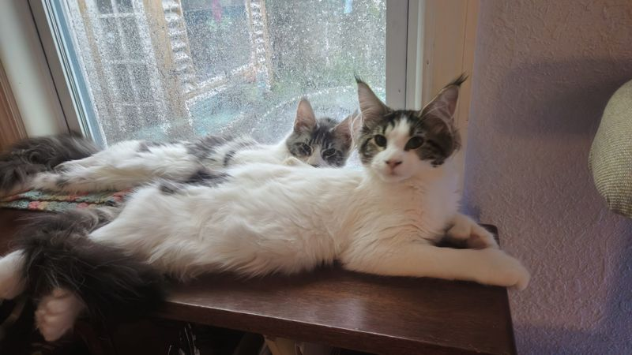
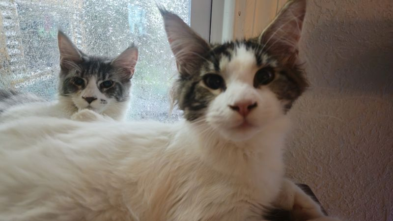

Big Maine Coons, raised in a little beach house.
We're a small family cattery in Daytona Beach, Florida. Our three girls, Opal, Iris and Roxy, live in our home, nap in our windows, and will raise their kittens right here with us.

Meet the moms
Every kitten we raise will come from one of these three. Each has her own page with photos, videos and notes on her personality.


Raised underfoot, not in a kennel
Maine Coons are big, gentle and social. They grow up best around people, so our kittens will be born and raised inside our house, not in a separate cattery building.
- Kittens grow up with everyday household sounds, visitors and lots of handling.
- Each kitten sees our veterinarian before going to a new home.
- We stay in touch after adoption and are always happy to answer questions.
- Registration and health testing details will be posted on each cat's page.
No kittens yet
Our first litters are still being planned. Join the waitlist and we'll email you when there's news.
From the blog
-

Meet the three cats who started it all
How Opal, Iris and Roxy came to live with us, and what each one is like at home.
-

Can a Maine Coon handle Florida heat?
A cat bred for Maine winters, living near the beach. Here's how we keep our long-haired girls comfortable.